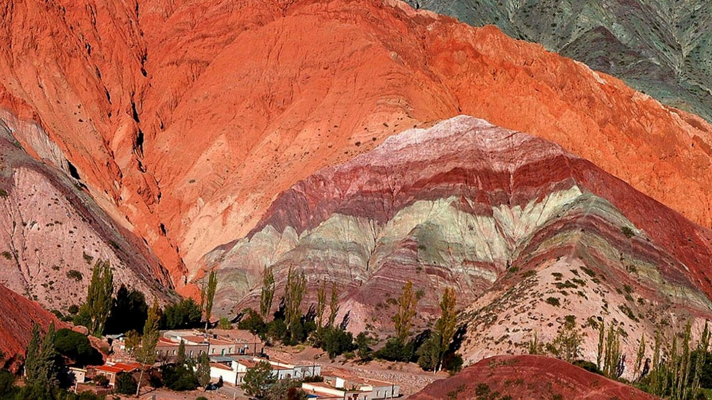
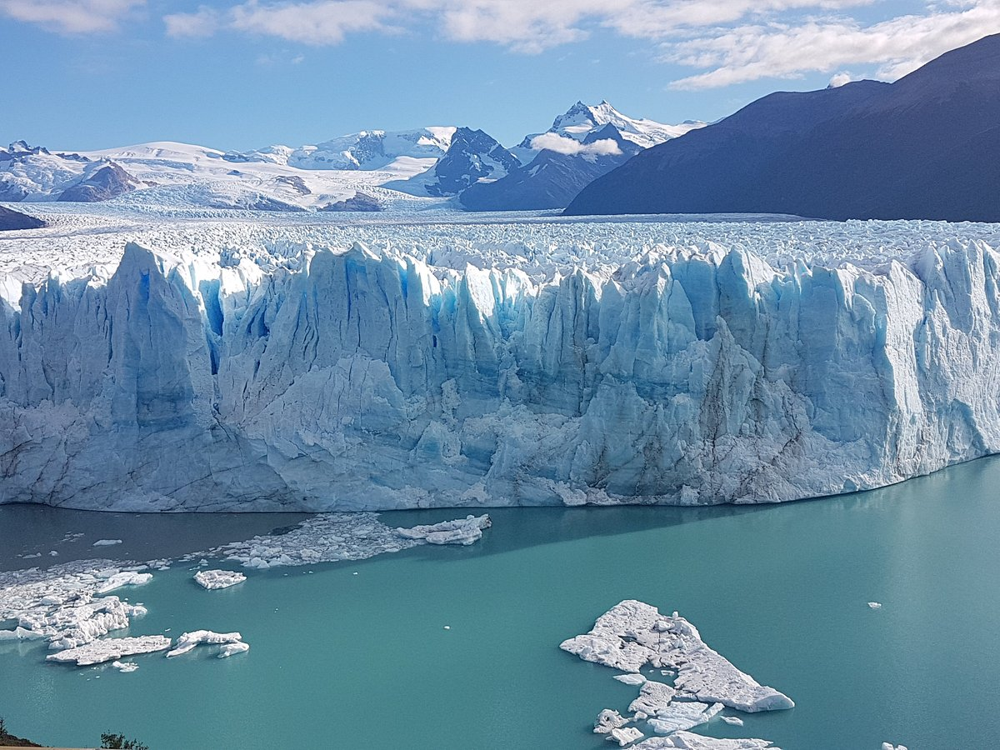
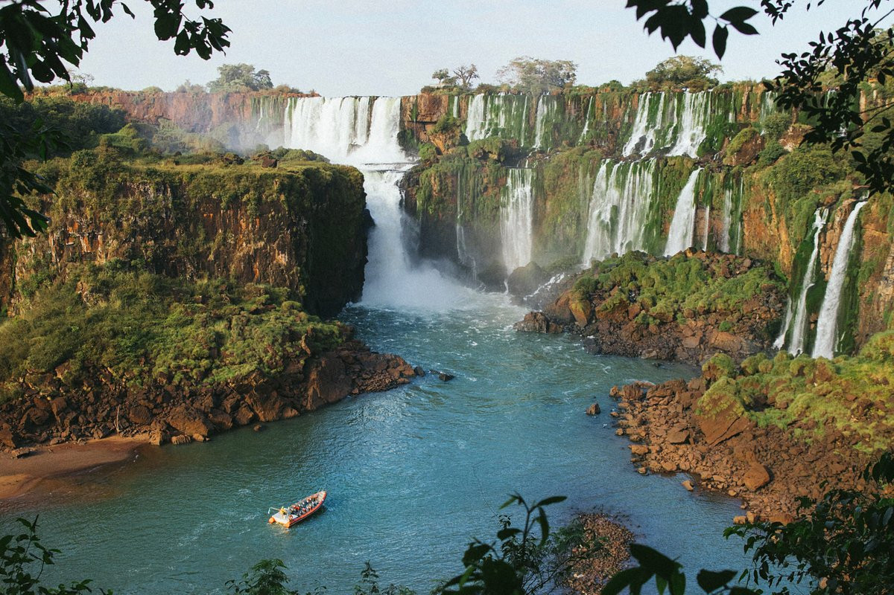

Cerro de los Siete Colores

El Macizo de los Siete Colores es un cerro ubicado en las afueras de la ciudad de Purmamarca sobre la Ruta Nacional 52 que se dirige al Paso de Jama (Frontera Argentina-Chile), a 4 kilómetros de la Ruta Nacional 9 en la provincia de Jujuy (Argentina).
La villa de Purmamarca se encuentra a sus pies y ambos forman una de las postales más reconocidas del noroeste argentino.
Fue originado alrededor de setenta y cinco millones de años atrás. Está conformado por sedimentos marinos, lacustres y fluviales que fueron depositándose en la zona durante siglos.
Glaciar Perito Moreno

El glaciar Perito Moreno es una gruesa masa de hielo ubicada en el departamento Lago Argentino de la provincia de Santa Cruz, en el sudoeste de la Argentina, en la región de la Patagonia. Se integra dentro del parque nacional Los Glaciares.
Este glaciar se origina en el campo de hielo Patagónico Sur. En su descenso, alcanza el brazo Sur del lago Argentino, con un frente de 5 km de longitud, aflorando sobre el agua con una altura de unos 60 m.
Gracias a su constante avance, forma una represa con las aguas del brazo Rico de dicho lago, lo cual genera un desnivel con respecto al resto del lago de hasta 30 m. Por la presión de esta masa líquida se producen filtraciones en el hielo que crean un túnel con una bóveda de más de 50 m de altura. El derrumbe de esta bóveda constituye un inusual espectáculo natural y es uno de los mayores atractivos del parque.
Parque Nacional Iguazú

El Parque Nacional Iguazú abarca un área de bosque subtropical en la provincia de Misiones de Argentina, en la frontera con Brasil. Dentro del parque, en el río Iguazú, las famosas Cataratas del Iguazú poseen varias cascadas separadas, incluida la icónica Garganta del Diablo. El parque circundante tiene una fauna diversa, incluidos coatíes, jaguares y tucanes, además de senderos y plataformas con miradores.